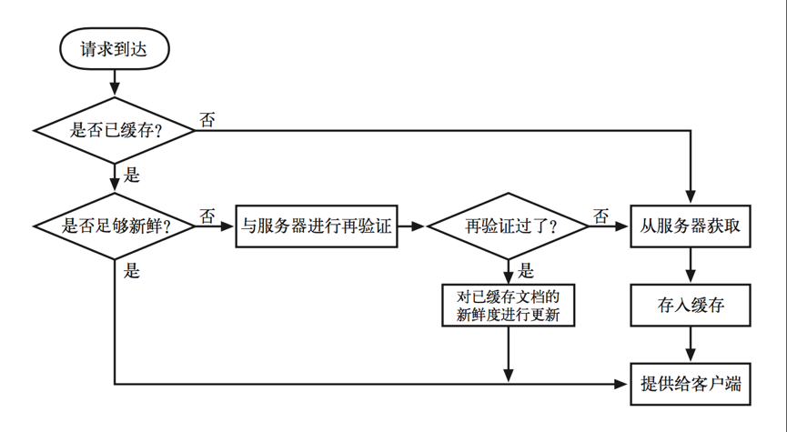

HTTP缓存
最近在学习HTTP缓存，使用缓存是网站优化的重要步骤。本文是对《HTTP权威指南》第七章缓存的一些摘要和总结。
在商业应用中，使用缓存服务器来提高性能降低对原始服务器的要求。对一条HTTP GET报文的基本缓存处理过程包括7个步骤 ：
(1) 接收——缓存从网络中读取抵达的请求报文。
(2) 解析——缓存对报文进行解析，提取出 URL 和各种首部。
(3) 查询——缓存查看是否有本地副本可用，如果没有，就获取一份副本(并将其保存在本地)。
(4) 新鲜度检测——缓存查看已缓存副本是否足够新鲜，如果不是，就询问服务器是否有任何更新。
(5) 创建响应——缓存会用新的首部和已缓存的主体来构建一条响应报文。
(6) 发送——缓存通过网络将响应发回给客户端。
(7) 日志——缓存可选地创建一个日志文件条目来描述这个事务。
这个过程如下图所示：

其中对于新鲜度检测这一步，HTTP协议有两个机制：文档过期和服务器再验证来保持缓存中副本的新鲜度。
1、文档过期
通过特殊的HTTP Cache-Control首部和Expires首部，HTTP让原始服务器向每个文档附加了一个“过期日期”。
Cache-Control首部和Expires首部告诉客户端到了某个时间点（比照客户端时间点）后本地缓存就过期了，在这个时间点内客户端可以认为缓存数据有效，可直接从缓存中加载展示返回200（强缓存），一旦资源命中强缓存，浏览器便不会向服务器发送请求，而是直接读取缓存。Chrome下的现象是200 OK (from disk cache) 或者 200 OK (from memory cache).
但一旦已缓存文档过期，缓存就必须与服务器进行核对，询问文档是否被修改过，如果文档被修改过，就要获取一份新鲜(带有新的过期日期)的副本。
服务器用HTTP/1.0+的Expires首部或HTTP/1.1的Cache-Control: max-age响应首部来指定过期日期，同时还会带有响应主体。Expires首部和Cache-Control: max-age首部所做的事情本质上是一样的，但由于Cache-Control首部使用的是相对时间而不是绝对日期，所以我们更倾向于使用比较新的Cache-Control首部。
Cache-Control在浏览器缓存中是金字塔顶尖的规则，它会覆盖一切与之相悖的规则。因此当Expires与之相悖时，就会忽略Expires。
2、服务器再验证
如果仅仅是Cache-Control首部和Expires首部规定的时间点过期了，那并不意味着它和原始服务器上目前正处于活跃状态的文档有实际区别。
这只是意味着到了要核对的时间了。这种情况被称为“服务器再验证”，说明缓存需要询问原始服务器文档是否发生了变化。如果再验证显示内容发生了变化，缓存会获取一份新的文档副本，并将其存储在旧文档的位置上，然后将文档发送给客户端。如果再验证显示内容没有发生变化，缓存只需要获取新的首部，包括一个新的过期日期，并对缓存中的首部进行更新就行了。
客户端检测到数据过期后，会向服务器发送一个get请求。在请求中一般会携带If-Modified-Since或If-None-Match请求头。
先说If-Modified-Since。如果在指定日期之后资源发生了变化，GET请求就会成功执行返回200响应。携带新首部的新文档会被返回给缓
存，新首部除了其他信息之外，还包含了一个新的过期日期。 如果自指定日期后，文档没被修改过，会向客户端返回一个304 Not Modified 响应报文，为了提高有效性，不会返回文档的主体。这些首部是放在响应中返回的，但只会返回那些需要在源端更新的首部。比如，Content-Type 首部通常不会被修改，所以通常不需要发送。一般会发送一个新的过期日期。
再说If-None-Match。有些情况下仅使用最后修改日期进行再验证是不够的。 比如：
(1) 有些文档可能会被周期性地重写(比如，从一个后台进程中写入)，但实际包含的数据常常是一样的。尽管内容没有变化，但修改日期会发生变化。
(2) 再比如有些文档可能被修改了，但所做修改并不重要，不需要让世界范围内的缓存都重装数据(比如对拼写或注释的修改)。
(3) 有些服务器无法准确地判定其页面的最后修改日期。
(4) 有些服务器提供的文档会在亚秒间隙发生变化(比如，实时监视器)，对这些服务器来说，以一秒为粒度的修改日期可能就不够用了。
在这些情况下HTTP允许用户对被称为实体标签(ETag)的“版本标识符” 进行比较。实体标签是附加到文档上的任意标签(引用字符串)。它们可能包含了文档的序列号或版本名，或者是文档内容的校验和及其他指纹信息。
当发布者对文档进行修改时，可以修改文档的实体标签来说明这个新的版本。这样，如果实体标签被修改了，缓存就可以用 If-None-Match 条件首部收到一条200已缓存的成功响应，返回新的内容以及相应的新 Etag。当实体标签没有被修改，就会返回304未修改响应。
如果 HTTP/1.1 缓存或服务器收到的请求既带有 If-Modified-Since，又带有实体标签条件首部ETag，那么只有这两个条件都满足时，才能返回 304 Not Modified 响应。
HTTP规范从未指定生成ETag的方法。生成ETag常用的方法包括对资源内容使用抗碰撞散列函数，使用最近修改的时间戳的哈希值，甚至只是一个版本号。
3、关于Cache-Control
服务器可以通过 HTTP 定义的几种方式来指定在文档过期之前可以将其缓存多长时间。按照优先级递减的顺序，服务器可以:
附加一个Cache-Control:no-store首部到响应中去;
附加一个Cache-Control:no-cache首部到响应中去;
附加一个Cache-Control:must-revalidate首部到响应中去;
附加一个Cache-Control:max-age首部到响应中去;
附加一个Expires日期首部到响应中去;
不附加过期信息，让缓存确定自己的过期日期。
标识为 no-store 的响应会禁止缓存对响应进行复制。缓存通常会像非缓存代理服务器一样，向客户端转发一条 no-store 响应，然后删除对象。
标识为 no-cache 的响应实际上是可以存储在本地缓存区中的。只是在与原始服务器进行新鲜度再验证之前，缓存不能将其提供给客户端使用。 我的理解是no-cache是表示max-age=0即立马过期。
Cache-Control: max-age首部表示的是从服务器将文档传来之时起，可以认为此文档处于新鲜状态的秒数 。
4、关于Expires响应首部
不推荐使用 Expires 首部，它指定的是实际的过期日期而不是秒数。HTTP 设计者后来认为，由于很多服务器的时钟都不同步，或者不正确，所以最好还是用剩余秒数，而不是绝对时间来表示过期时间。
5、当响应中没有Cache-Control: max-age首部，也没有 Expires 首部时
如果响应中没有Cache-Control: max-age首部，也没有 Expires 首部，那么使用LM-Factor 算法 的试探性过期算法，用当前时间Date与文档的最后修改时间之差，取这个间隔时间的一部分，将其作为缓存中的新鲜度持续时间。
6、用户操作行为与缓存
用户在使用浏览器的时候，会有各种操作，比如输入地址后回车，按F5刷新等，这些行为会对缓存有什么影响呢？

通过上表我们可以看到，当用户在按F5进行刷新的时候，会忽略Expires/Cache-Control的设置，会再次发送请求去服务器请求，而Last-Modified/Etag还是有效的，服务器会根据情况判断返回304还是200；而当用户使用Ctrl+F5进行强制刷新的时候，只是所有的缓存机制都将失效，重新从服务器拉去资源。